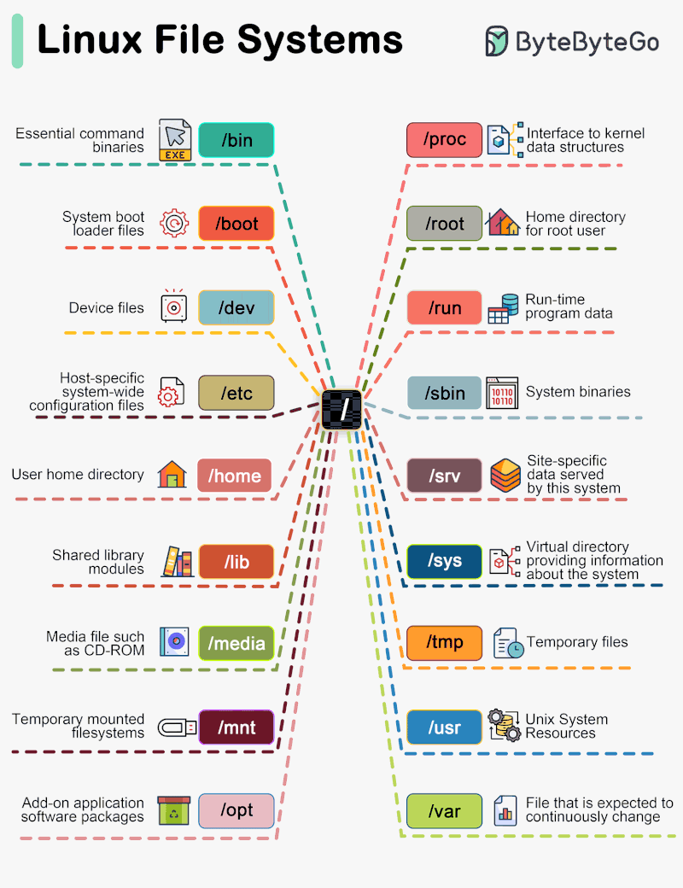

flowchart TD
A["Main Filesystems on FH"] --> B
click A "#sec-filesystems"
B["Home Directories"] --> C
click B "#sec-home"
C["Absolute/Relative Paths"] --> D
click C "#sec-paths"
D["Project Based File Structures"] --> E
click D "#sec-project"
E["Moving Things Around"]
click E "#sec-moving"
5 Navigating the Unix Filesystem
5.1 Learning Objectives
After reading this chapter, you should be able to:
- Navigate the HPC filesystem using both absolute and relative paths
- Identify the shared filesystems associated with your cluster
- Develop Scripts that use multiple filesystems to process data
- Explain the benefits of a folder-based approach to organizing your analysis
- Move Files between filesystems and folders
5.2 Visual Table of Contents
5.3 FH users: the main filesystems
When working on the Fred Hutch HPC, there are three main filesystems you should consider:
/home/- The home filesystem. Your scripts can live here. Also where your configuration files (such as.bashrc) live./fh/fast/(also known as fast) - Research storage. Raw files and processed results should live here./fh/temp/(also known as temp) - The temporary filesystem. This filesystem is faster to access for gizmo nodes on the cluster, so files can be copied to for computation. The output files you generate should be moved back into an appropriate folder on/fh/fast/. Note that files on/fh/temp/will be deleted after 30 days.
5.3.1 A Simplified Workflow: /fh/fast/ and /fh/temp/
A simple approach is to have your scripts also live in your project folder in fast. Then, you can sync the project in /fh/fast/ over to /fh/temp/, run the scripts in /fh/temp/, and then sync the two folders again. You can do the file sync’ing in both directions with Motuz (Section 5.3.3), which has its own advantages.
If you want to go this route, you should think about using a Folder Based Workflow (Section 5.6), where everything lives in a folder.
Another thing to consider is to have a backup of the scripts that is either on your own machine or in GitHub. You can do this by using your .gitignore to exclude the data and results.
graph LR
A["Fast\n/fh/fast/my_lab/project/\nRaw Data & Scripts"] --"1. Sync Data\n& scripts"-->B
B["Temp\n/fh/temp/my_lab/project\n2. Run Scripts here"] --"3. Sync\nresults"-->A
5.3.2 Another Approach
Below is a a diagram with another way to work with these multiple filesystems.
- We transfer the raw files to be processed from
/fh/fast/to our directory/fh/temp/. For example, a set of.bamfiles. - We run our scripts from
/home/, on the raw files in/fh/temp/and produce results in/fh/temp/. - We transfer our results from
/fh/temp/to/fh/fast/.
graph LR
A["Home Directory\n/home/tladera2/\nScripts"] --"2. run scripts"--> C
B["Fast\n/fh/fast/tladera2\nResearch Data"] --"1. transfer\nraw files"--> C
C["Temp\n/fh/temp/tladera2"] --"3. transfer\nresults"--> B
5.3.3 Transferring Files between Filesystems
Your main mechanism for getting files to and from fast and scratch is Motuz, which is a GUI based file transfer utility.
One of the advantages of Motuz is that it supports file resuming in case of disconnection, avoiding having to reupload the whole batch of files over again.
Motuz also supports file transfers between other filesystems at FH, including the FH Amazon S3 bucket. Highly recommended.
5.3.4 When in doubt: pwd
The pwd command (short for present working directory) will let you know your current location in the filesystem. Knowing your current directory is critical when using relative file paths.
5.4 Going /home: ~/
There is one important file alias you should always remember: ~/ is shorthand for your own home directory.
Depending on the linux distribution, this can be a different location. On the FH filesystem, when I use ~/, it maps to:
/home/tladera2/
The home directory is also important because it is where your configuration files live, such as .bashrc (see Section 4.4.4).
Depending on how you work, you may want to store your scripts and workflows in /home/. Some people prefer to keep their scripts, data, and results in a single folder. For more info, see Section 5.6.
5.5 Absolute versus relative paths
Absolute paths contain all the information needed to find a file in a file system from the root / directory. For example, this would be an absolute path:
/fh/fast/laderast/immuno_project/raw_data/chr2.fa.gzIn terms of folder structure, this is what this looks like:
/
├── fh
│ └──fast
│ └──laderast
| └──immuno_project
│ └──raw_data
│ └──chr2.fa.gzAbsolute paths always start with /, because that is the root directory, where all the top folders and files live.
Relative paths break up an absolute path into two pieces of information: 1) your current directory and 2) the path relative to that directory. Relative paths are really helpful because things don’t break when you move your folder or files.
If my current working directory is the directory /fh/fast/laderas_t/immuno_project/, then the relative path to that same file would be:
raw_data/chr2.fa.gzWe can visualize the relative path like this, where our working directory is indicated by a star
/
├── fh/fast/laderast/immuno_project/ *
| ^working directory └──raw_data
│ └──chr2.fa.gz
^relative pathNote that this relative path does not start with a /, because our current directory isn’t the root directory. Relative paths are incredibly useful when scripting in a reproducible manner, such as using project-based workflows to process files in a single folder.
5.5.1 Keep Everything in Folders
We need to talk about code and data organization. For the FH system, we have a /home/ directory, and if we have generated research data, a /fh/fast/ directory. If we want our scripts to live in /home/ and our data is in /fh/temp/, we’ll need to refer to each of these file locations.
Ideally, we want to make the naming conventions of our code and our data as similar as possible.
5.6 Project/folder based workflows
On a particular machine, using absolute paths is safe. However, you do this at the cost of portability - code that you write on one machine may not run on another.
If you ever anticipate doing the analysis on a separate machine, using project structures with relative paths is the safest. For example, you may want to move from the on-premise FH system to working with the data in AWS.
Here’s one example of putting everything into a single folder:
my_project
├── data
│ ├── chr1.fa.gz
│ ├── chr2.fa.gz
│ └── chr3.fa.gz
├── results
├── run_workflow.sh
└── scripts
└── run_bowtie.shIn the above example, our project is named my_project, and there are three folders inside it: data/, results/, and scripts/. Our main script for running is my_project/run_workflow.sh. Because this script is in the root folder, we can refer to the data/ folder to process files:
./scripts/run_bowtie.sh data/*.fa.gz results/When we run run_workflow.sh, it will execute run_bowtie.sh on all of the files in data/, and save them in results/, resulting in the following updated structure.
my_project
├── data
│ ├── chr1.fa.gz
│ ├── chr2.fa.gz
│ └── chr3.fa.gz
├── results
│ ├── chr1.bam
│ ├── chr2.bam
│ └── chr3.bam
├── run_workflow.sh
└── scripts
└── run_bowtie.shYou may have seen relative paths such as ../another_directory/ - the .. means to go up a directory in the file hierarchy, and then look in that directory for the another_directory/ directory. I try to avoid using relative paths like these.
In general for portability and reproducibility, you will want to use relative paths within a directory, and avoid using relative paths like ../../my_folder, where you are navigating up. In general, use relative paths to navigate down.
5.7 Moving Things Around
A lot of the time, we need to move files between shared filesystems. One filesystem might be good at storage and be backed up on a regular basis, while another filesystem might be better for temporary work on the cluster.
You might be familiar with mv, which lets you move files around in Unix. One thing to keep in mind when you’re mving things to a new folder that there is a difference between:
mv log.txt my_folder ## renames log.txt to my_folderand
mv log.txt my_folder/ ## moves log.txt to be in my_folderThis is one thing that trips me up all the time.
This is one situation where using a GUI such as Motuz (Section 5.3.3) can be very helpful. You don’t have to worry about accidentally renaming files.
Other tools for sync’ing between filesystems include rsync, which requires careful reading of documentation.
5.8 File Permissions
File permissions are metadata that are attached to file objects. They are how the system prevents certain files from being messed with.
All files have the following level of access permissions:
| Level | Description |
|---|---|
| Owner-level | The owner of the file |
| Group-level | The group of the file |
| Everyone | The rest of the world |
Each level has the following type of access
| Type | Description | Abbreviation | Example |
|---|---|---|---|
| Read | Level can only read contents of file | r |
A list of users in a text file |
| Write | Level can write to the file | w |
Appending an entry to the end of a log |
| Execute | Level can run the file as an executable | x |
samtools |
The cardinal rule to remember is that
If you want to run a file as an executable, you need to have executable level permission.
For example, if I want to run a script called run_samtools.sh in my directory like this:
./run_samtools.sh my_bam_file.bamI will need to have execute privileges at the user, group, or others level.
5.8.1 For More Info
5.9 Common Unix Directories

5.10 What’s Next?
Now that we have learned the different filesystems and how to specify them and navigate them, we are now able to try out shell scripting (Chapter 7).